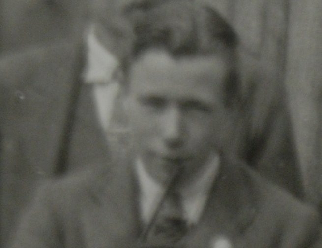
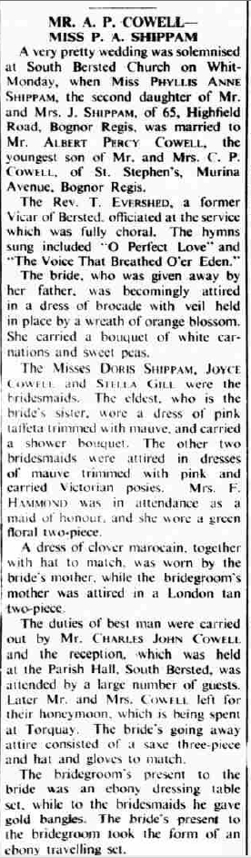

Albert Percy Cowell 1914 - 2002
[ Home ] | [ Calendar ] | [ Surnames Index ] | [ Family History ]An upholsterer and the youngest of 4 children of Charles Cowell (a newsagent) and Elizabeth Russell, Albert Cowell, the first cousin once-removed on the mother's side of <a href="I1.html">Nigel Horne</a>, was born in Sussex, England on May 15, 1914<span class="citation">1</span> and. He married Phyllis Shipham (with whom he had 1 surviving child) in South Bersted, Chichester, Sussex on Jun 6, 1938<span class="citation">3</span>.</p><p>Throughout his life, he lived on Full Cottages, Highfield Road, Bognor, West Sussex, England on Jun 19, 1921<span class="citation">1</span>; and on 65 Highfield Road, Bognor Regis, Sussex on Sep 29, 1939<span class="citation">4</span>. 1939 Civilian Role: Auxiliary Fire Service in 1939. <p>He died on Jan 22, 2002 in Chichester, Sussex<span class="citation">2</span>.
Parents
- Charles Percy was born on Mar 9, 1879
- Elizabeth Ellen was born on Mar 5, 1877
Citations
- 1921 Census Of England & Wales - Findmypast (was age 7 and the son of the head of the household)
- England & Wales, Death Index: 1984-2005 Online publication - Provo, UT, USA: The Generations Network, Inc., 2007.Original data - General Register Office. England and Wales Civil Registration Indexes. London, England: General Register Office. © Crown copyright. Published by permission of the Cont
- England & Wales Marriages 1837-2005 - Findmypast
- 1939 Register - Findmypast (was recorded at this address)
Media
Albert Percy Cowell

Chichester Observer 30 January 1935

Bognor Regis Observer 8 June 1938

England & Wales deaths 1837-2007 - BMD/D/2002/1/84873664
England & Wales births 1837-2006 Transcription - BMD-B-1914-2-AZ-000331-091
1939 Register Transcription - TNA-R39-2577-2577B-013-35
1939 Register Image - TNA-R39-2577-2577B-013
England & Wales marriages 1837-2008 - BMD/M/1938/2/AZ/000305/053
Family Tree

Generated by Ged2Site. Last updated on Jul 20, 2025